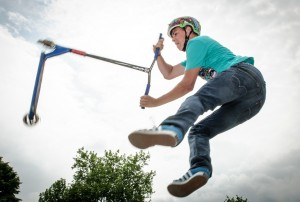
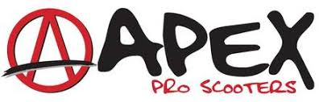
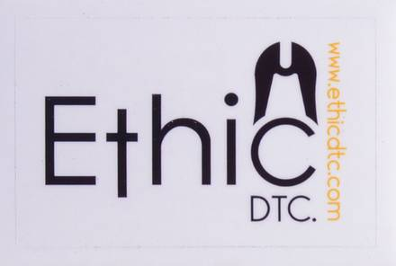
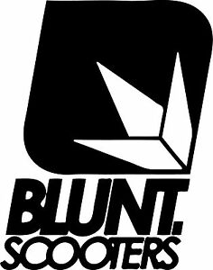

Ce site explique ma passion
Mon instagram : @scoot__world
Les trois plus grandes de trottinette sont : apex, ethic et blunt
  Il existe plusieurs grandes compétitions de trottinette freestyle : La Fise qui est le festival international de sport extreme et qui a lieu tous les ans à Montepellier et le Nitro Circus ou les trottiriders partcipent mais qui réunie également des disciplines comme la motocross, le BMX et le skate.
Ma deuxième page